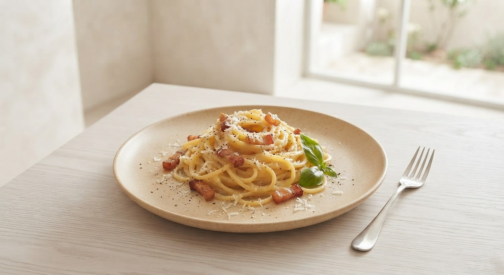
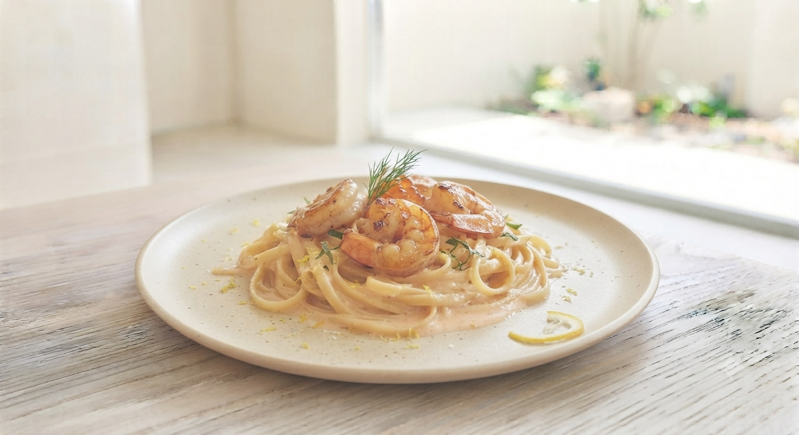
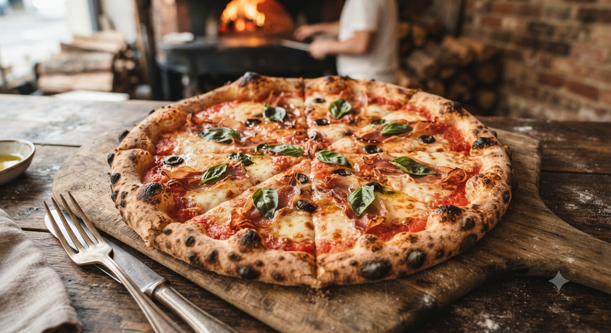
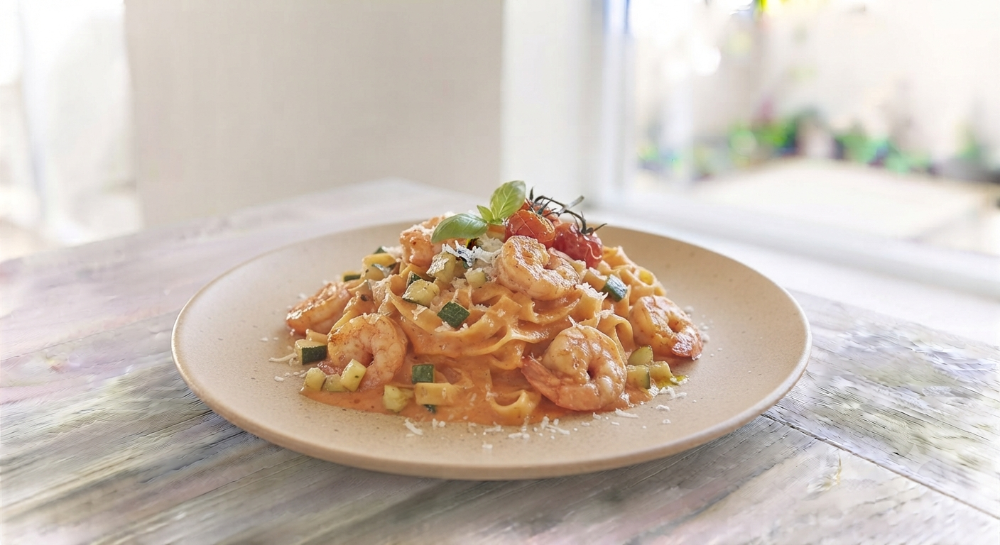

Idea 01
映画館チカ企画
映画の半券で、ちょっとお得に。
映画館の近くという立地を活かして！映画鑑賞の前後に対象のチケット（半券）をお持ちいただくと、お会計から割引、または限定のドリンクやデザートサービスが受けられる特典を企画中です。
映画の余韻をイタリアンとともに
準備中

SINCE 2000 | MORIOKA SAIEN
Authentic Italian Cuisine

クチコミでも絶賛されるもちもちのフェットチーネ。乾麺か生麺か選べるのも、パスタ専門店ならではの喜びです。「細いの、平べったいの」と分かりやすい言葉でお好みを伺います。

扉を開けた瞬間に広がるキッチンの活気。最大22席の小規模店だからこそ実現できる、シェフとの距離感と温かみ。若いスタッフの自然な笑顔が、心地よい時間をお約束します。
「すぐにドアを開けて見送ってくれる心遣いに感動しました」 — Googleクチコミより
盛岡の美食家たちに支持される理由
「フェットチーネはもちもちで、塩味も絶妙。レモンがちょうど良いとてもおいしいペペロンチーノでした。」
「お勧めは海鮮系のサラダ。一人一皿注文するほど美味しい。グラスワインも安価ながら美味しく、魅力の一つ。」
「こちらの状況をよく見ていて、タイミングよくドアを開けてくれました。温かみのある内装で居心地が良いです。」
皆様のまたのご来店を、心よりお待ちしております。Instagramのフォロー画面提示でも特典をご利用いただけます。
Instagramをフォロー
オリーブの実をもっと楽しんでいただくための、現在検討中・準備中の企画です。
映画館の近くという立地を活かして！映画鑑賞の前後に対象のチケット（半券）をお持ちいただくと、お会計から割引、または限定のドリンクやデザートサービスが受けられる特典を企画中です。
「乾麺と生麺、どちらにするかいつも迷う…」そんなお声から生まれたアイデア。同じ自慢のパスタソースで、食感の異なる2種類の麺をひと皿で楽しめる贅沢な盛り合わせメニューを試作中です。
〒020-0024 岩手県盛岡市菜園2丁目4−23
盛岡中心部。最寄りバス停より徒歩1〜2分
Lunch / Dinner (定休日なし)
各種カード・PayPay・au PAY利用可
最大22席（貸切パーティーも対応可能）
週末やランチタイムは混み合う場合がございます。
お早めのご予約をお勧めしております。
※少人数のため、お電話が繋がりにくい時間帯がございます。
WEB予約を24時間受け付けております。
